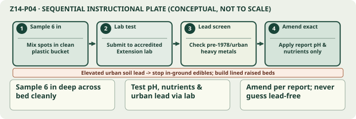

Z14-P04 · Food production and preservation · New manuscript
Test garden soil via accredited labs for pH, nutrients, and urban lead risk
Guide soil amendments scientifically while screening urban or older residential lots for invisible heavy-metal contamination.
When it applies · New vegetable beds, older homes built before 1978, roadside lots, or gardens with poor crop vigor.
Equipment · Clean plastic bucket, clean trowel, sample bags, and accredited university soil-testing lab kit (e.g., UMN Soil Testing Lab).

Actions
- Collect a composite soil sample from multiple spots across the root zone (roughly 6 inches deep) using a clean plastic bucket and submit it to an accredited university Extension lab BEFORE adding lime, sulfur, or heavy fertilizers.[P02]
- Request a heavy-metal/lead screening test on any urban plot, yard near pre-1978 painted structures, former industrial corridor, or roadside soil—invisible lead dust persists for decades and binds to root skins and leafy crops.[P02]
- Apply soil amendments strictly according to the lab report's exact pH and nutrient recommendations rather than guessing—over-fertilizing wastes money, burns roots, and leaches nitrates into private wells and lakes.[P02, U05]
Failure recognition · Dumping bags of random lime and high-nitrogen fertilizer onto untested soil next to flaking 1940s exterior house paint.[P02]
Verify · Confirm accredited lab report received for pH, organic matter, nutrients, and lead status before planting root/leafy crops directly in ground.[P02]
Stop or change course · Elevated soil lead levels require halting in-ground edible planting and switching to barrier-lined raised beds filled with clean tested soil.[P02]
Evidence and editorial notes
- P02 · University of Minnesota Extension · Planting the Vegetable Garden (current web edition)
- Section: Soil Preparation, Testing, Compost, and Safe Fertility · Conditions: Residential garden beds and small-acreage food plots
Support: Test garden soil through an accredited lab (e.g., UMN Soil Testing Lab) before heavy amending to determine pH, nutrients, and urban lead risk; incorporate finished compost and avoid applying raw animal manure immediately before harvesting edible crops.
Limitations: Urban soils near older painted buildings or roads may contain legacy lead requiring raised beds and clean soil barriers. · Conflicting evidence: None; links soil fertility to food-safety contamination prevention.
Editorial note: Separates safe composted soil building from pathogen/heavy-metal hazards. · Specialist reviewer: Soil science and Extension horticulture
Primary source · checked 2026-11-24 - U05 · US EPA · Private Drinking Water Wells (current web edition)
- Section: Private Drinking Water Wells > Maintenance, Floods, and Testing · Conditions: Households relying on private domestic groundwater wells
Support: Private wells are not regulated by municipal utilities; test water annually (and after any flood, power loss with pressure drop, or plumbing repair) through a certified laboratory and keep wellheads sealed above grade away from runoff and chemicals.
Limitations: Visual clarity or normal taste never proves a private well is free of bacteria, nitrates, or arsenic. · Conflicting evidence: None; aligns with CDC-WELL (W18) and MDH-WELL-HOME.
Editorial note: Core private-well governance and testing cadence in Z13. · Specialist reviewer: Hydrogeology, licensed well contractor, and public health
Primary source · checked 2026-11-24
Source lineage · UMN Extension Soil and Gardening Guidance; new manuscript · Classification · New manuscript.